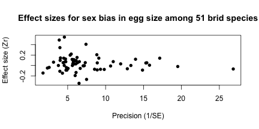
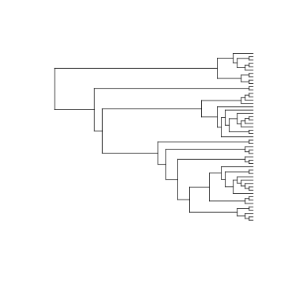

Using the Open Tree synthesis in a comparative analysis
David Winter
2026-01-15
Source:vignettes/meta-analysis.Rmd
meta-analysis.RmdPhylogenetic Comparative Methods
The development of phylogenetic comparative methods has made phylogenies and important source of data in fields as diverse as ecology, genomic and medicine. Comparative methods can be used to investigate patterns in the evolution of traits or the diversification of lineages. In other cases a phylogeny is treated as a “nuisance parameter”, allowing with the autocorrelation created by the shared evolutionary history of the different species included to be controlled for.
In many cases finding a tree that relates the species for which trait
data are available is a rate-limiting step in such comparative analyses.
Here we show how the synthetic tree provided by Open Tree of Life (and
made available in R via rotl) can help to fill this
gap.
A phylogenetic meta-analysis
To demonstrate the use of rotl in a comparative
analysis, we will partially reproduce the results of Rutkowska et al
2014. Very briefly, this study is a meta-analysis summarising the
results of multiple studies testing for systematic differences in the
size of eggs which contain male and female offspring. Such a difference
might mean that birds invest more heavily in one sex than the other.
Because this study involves data from 51 different species, Rutkowska et al used a phylogenetic comparative approach to account for the shared evolutionary history among some of the studied-species.
Gather the data
If we are going to reproduce this analysis, we will first need to gather the data. Thankfully, the data is available as supplementary material from the publisher’s website. We provide a copy of this data with the package:
## This dataset is available from the publisher's study website:
egg_data <- read.csv(system.file("extdata", "egg.csv", package = "rotl"),
stringsAsFactors = FALSE
)
## }
head(egg_data)## animal Spp Lndim Measure Neggs Nclutches ESr Type StudyID Year D EN Zr VZr
## 1 Zonotrichia_leucophrys White-crowned sparrow 0.000000000 volume 294 73 0.14004594 stat Mead1987 1987 3.421918 85.91673 0.14097244 0.012060292
## 2 Passer_domesticus House sparrow 0.009407469 volume 149 31 0.11175203 stat Cordero2000 2000 4.045161 36.83413 0.11222075 0.029555954
## 3 Serinus_canaria Canary 0.000000000 volume 52 21 0.49679140 stat Leitner2006 2006 2.180952 23.84279 0.54503712 0.047978211
## 4 Turdus_merula European blackbird 0.021189299 volume 82 54 0.38598540 stat Martyka2010 2010 1.414815 57.95812 0.40707397 0.018195675
## 5 Agelaius_phoeniceus Red-winged blackbird 0.218316086 volume 394 106 0.07410136 raw Weatherhead1985 1985 3.173585 124.14982 0.07423744 0.008254242
## 6 Quiscalus_mexicanus Great-tailed grackle 0.281894985 mass 822 205 0.05178834 raw Teather1989 1989 3.407805 241.21099 0.05183471 0.004197959The most important variable in this dataset is Zr, which
is a normalized
effect size for difference ,in size between eggs that contain males
and females. Values close to zero come from studies that found the sex
of an egg’s inhabitant had little effect in its size, while large
positive or negative values correspond to studies with substantial sex
biases (towards males and females respectively). Since this is a
meta-analysis we should produce the classic funnel plot with
effects-size on the y-axis and precision (the inverse of the sample
standard error) on the x-axis. Here we calculate precision from the
sample variance (Vzr):
plot(1 / sqrt(egg_data$VZr), egg_data$Zr,
pch = 16,
ylab = "Effect size (Zr)",
xlab = "Precision (1/SE)",
main = "Effect sizes for sex bias in egg size among 51 brid species"
)
In order to use this data later on we need to first convert it to a
standard data.frame. We can also convert the
animal column (the species names) to lower case, and remove
the underscores in their names, which will make it easier to match names
later on:
egg_data <- as.data.frame(egg_data)
## Convert taxon names to lower case
egg_data$animal <- tolower(egg_data$animal)
## Let's remove the underscores (_) from the taxon names
egg_data$animal <- gsub("_", " ", egg_data$animal)Find the species in OTT
We can use the OTL synthesis tree to relate these species. To do so
we first need to find Open Tree Taxonomy (OTT) IDs for each species. We
can do that with the Taxonomic Name Resolution Service function
tnrs_match_names:
taxa <- tnrs_match_names(unique(egg_data$animal), context_name = "Animals")
head(taxa)## search_string unique_name approximate_match score ott_id is_synonym flags number_matches
## 1 zonotrichia leucophrys Zonotrichia leucophrys FALSE 1 265553 FALSE 1
## 2 passer domesticus Passer domesticus FALSE 1 745175 FALSE 1
## 3 serinus canaria Serinus canaria FALSE 1 464865 FALSE sibling_higher 1
## 4 turdus merula Turdus merula FALSE 1 568572 FALSE 1
## 5 agelaius phoeniceus Agelaius phoeniceus FALSE 1 226605 FALSE 1
## 6 quiscalus mexicanus Quiscalus mexicanus FALSE 1 743411 FALSE 1All of these species are in OTT, but a few of them go by different
names in the Open Tree than we have in our data set. Because the tree
rotl fetches will have Open Tree names, we need to create a
named vector that maps the names we have for each species to the names
Open Tree uses for them:
taxon_map <- structure(taxa$search_string, names = taxa$unique_name)Now we can use this map to retrieve “data set names” from “OTT names”:
taxon_map["Anser caerulescens"]## Anser caerulescens
## "chen caerulescens"Get a tree
Now we can get the tree. There are really too many tips here to show nicely, so we will leave them out of this plot
tr <- tol_induced_subtree(ott_id(taxa)[is_in_tree(ott_id(taxa))])## Warning in collapse_singles(tr, show_progress): Dropping singleton nodes with labels: mrcaott246ott92263, mrcaott246ott1858, mrcaott246ott3600042, mrcaott246ott7113, Passeriformes ott1041547, mrcaott246ott3212, mrcaott246ott428578, mrcaott246ott44866,
## mrcaott246ott5929, mrcaott246ott96288, mrcaott246ott310390, mrcaott246ott176461, mrcaott246ott22325, mrcaott246ott10351, mrcaott246ott72472, mrcaott246ott5934, mrcaott246ott3599436, mrcaott246ott1566, mrcaott1566ott3598440, mrcaott1566ott496009,
## mrcaott1566ott35326, mrcaott1566ott92668, mrcaott1566ott24297, mrcaott1566ott22300, mrcaott22300ott35350, mrcaott22300ott32651, mrcaott22300ott547548, mrcaott22300ott67150, mrcaott22300ott130294, mrcaott22300ott7660860, mrcaott22300ott416087,
## mrcaott22300ott416089, mrcaott22300ott107840, mrcaott113980ott364210, mrcaott113980ott3598839, mrcaott3598839ott5341363, mrcaott19467ott431648, mrcaott19467ott401023, mrcaott19467ott252687, mrcaott19467ott233446, mrcaott19467ott378061, mrcaott19467ott1046624,
## mrcaott19467ott161293, mrcaott19467ott46396, mrcaott46396ott46399, mrcaott46399ott168083, mrcaott168083ott691103, mrcaott2175ott600902, mrcaott2175ott259082, mrcaott2175ott59905, mrcaott2175ott2224, mrcaott2224ott366470, mrcaott3364ott310375, mrcaott3364ott4083,
## mrcaott4083ott35042, mrcaott4083ott35053, mrcaott4083ott370807, mrcaott4083ott469177, mrcaott4083ott11712, mrcaott4083ott52094, mrcaott4083ott95949, Erythrura ott465905, mrcaott24017ott24025, mrcaott24025ott596763, mrcaott24025ott389884, mrcaott24025ott453058,
## mrcaott24025ott865473, mrcaott24025ott141501, mrcaott141501ott389883, mrcaott141501ott3597689, mrcaott141501ott865472, mrcaott141501ott3597698, mrcaott105913ott596770, mrcaott105913ott3599583, mrcaott105913ott543841, mrcaott105913ott124463,
## mrcaott124463ott445491, mrcaott445491ott7068429, mrcaott445491ott708327, mrcaott4088ott95302, mrcaott4088ott8371, mrcaott4088ott138768, mrcaott4088ott28339, mrcaott4088ott5616, mrcaott5616ott6023, mrcaott6023ott243614, mrcaott6023ott101225, mrcaott6023ott125079,
## mrcaott125079ott463026, mrcaott125079ott765405, Zonotrichia (genus in domain Eukaryota) ott789032, mrcaott125079ott265547, mrcaott125079ott265554, mrcaott5620ott254662, mrcaott5620ott29804, mrcaott29804ott998133, mrcaott29804ott449562, mrcaott29804ott86894,
## mrcaott29804ott93045, mrcaott93045ott264496, mrcaott264496ott264500, mrcaott264500ott3597163, mrcaott264500ott283668, Quiscalus ott743410, mrcaott283673ott673386, mrcaott283673ott741944, mrcaott283673ott735243, mrcaott213448ott213452, mrcaott213448ott1009279,
## mrcaott213448ott213451, mrcaott213454ott430627, Agelaius ott617799, mrcaott430627ott617797, mrcaott430627ott3597159, mrcaott99175ott364331, Xanthocephalus ott364336, mrcaott6366ott28332, mrcaott6366ott88283, mrcaott6366ott341465, mrcaott6366ott157599,
## mrcaott6366ott178457, mrcaott6366ott405215, mrcaott6366ott238137, mrcaott6366ott6375, mrcaott6375ott119724, mrcaott6375ott328909, mrcaott328909ott464865, mrcaott464865ott1083724, Haemorhous ott3601758, mrcaott9416ott580155, mrcaott9416ott840030,
## mrcaott9416ott96147, mrcaott9416ott749634, Passer ott515158, mrcaott9416ott7661508, mrcaott9416ott25628, mrcaott9416ott407763, mrcaott9416ott407764, mrcaott9416ott68955, mrcaott9416ott73636, mrcaott73636ott5859927, mrcaott73636ott995847, mrcaott1488ott63797,
## mrcaott1488ott284404, mrcaott1488ott107463, mrcaott1488ott17016, mrcaott1488ott16185, Hirundinidae ott897681, mrcaott16185ott67921, mrcaott16185ott67916, mrcaott67916ott368059, mrcaott67916ott67920, mrcaott67920ott3597799, Delichon ott922719,
## mrcaott44217ott107476, mrcaott107476ott177058, mrcaott107476ott446183, mrcaott107476ott337755, mrcaott107476ott337752, mrcaott337752ott374222, mrcaott337752ott337762, mrcaott337752ott3598087, mrcaott337752ott496789, mrcaott2375ott73144, mrcaott2375ott124085,
## mrcaott2375ott71358, mrcaott2375ott814750, mrcaott2375ott61147, mrcaott61147ott84656, mrcaott61147ott123763, mrcaott123763ott258794, mrcaott4820ott294599, mrcaott4820ott75981, mrcaott4820ott379708, mrcaott4820ott17162, mrcaott4820ott20998, mrcaott4820ott20989,
## mrcaott4820ott58860, mrcaott4820ott23690, mrcaott4820ott20996, mrcaott4820ott749725, mrcaott4820ott11462, mrcaott4820ott140440, mrcaott4820ott197505, mrcaott4820ott75978, mrcaott4820ott11315, mrcaott4820ott5933, mrcaott5933ott662804, mrcaott5933ott60465,
## mrcaott5933ott25637, mrcaott25637ott473431, mrcaott25637ott199843, mrcaott25637ott111993, mrcaott25637ott183621, mrcaott183621ott282315, mrcaott282315ott501241, mrcaott501241ott597018, mrcaott686165ott686168, mrcaott60456ott75990, mrcaott60456ott894604, Pica
## ott776480, Falconiformes ott212187, Falconidae ott212186, mrcaott47588ott225286, mrcaott47588ott748842, mrcaott47588ott3596147, Falco ott786441, mrcaott179290ott624976, mrcaott179290ott624973, mrcaott179290ott3596145, mrcaott179290ott624974,
## mrcaott179290ott432111, mrcaott179290ott285806, Cerchneis ott3596159, mrcaott5272ott928360, mrcaott5272ott7145, mrcaott5272ott24121, Scolopacidae ott887699, mrcaott24121ott217797, mrcaott24121ott45306, mrcaott24121ott55408, mrcaott24121ott420370,
## mrcaott24121ott654830, mrcaott24121ott214779, mrcaott24121ott1090732, mrcaott7639ott306220, mrcaott7639ott57833, mrcaott7639ott738512, mrcaott7639ott279504, mrcaott7639ott47401, mrcaott47401ott234666, mrcaott234666ott341044, mrcaott234666ott651058,
## mrcaott234666ott341047, mrcaott234666ott285543, mrcaott285543ott341030, mrcaott285543ott341032, mrcaott285543ott738509, mrcaott285543ott966606, mrcaott285543ott966604, mrcaott22965ott80679, mrcaott22965ott154126, mrcaott22965ott373759, mrcaott22965ott282132,
## mrcaott22965ott414141, mrcaott22965ott335737, mrcaott22965ott509055, mrcaott22965ott324050, mrcaott22965ott910287, mrcaott22965ott353849, mrcaott22965ott335736, mrcaott22965ott526679, mrcaott22965ott75913, mrcaott75913ott515357, mrcaott75913ott119602,
## mrcaott75913ott993041, mrcaott425206ott887691, mrcaott425206ott515355, mrcaott241571ott993045, mrcaott241571ott1026258, mrcaott241571ott254356, mrcaott241571ott704181, mrcaott704181ott4947414, mrcaott147723ott219032, Stercorariidae ott168297, Stercorarius
## ott742632, mrcaott742640ott742641, mrcaott57823ott57827, mrcaott57823ott242771, mrcaott57823ott80080, mrcaott57823ott112937, mrcaott112937ott673638, mrcaott112937ott129402, mrcaott112937ott242776, mrcaott242776ott3596974, mrcaott242776ott3596977,
## mrcaott242776ott313115, mrcaott242776ott413796, mrcaott5481ott9830, mrcaott9830ott86672, mrcaott9830ott90560, mrcaott9830ott324158, mrcaott9830ott55044, mrcaott9830ott285638, mrcaott9830ott117726, Sulidae ott452462, mrcaott170197ott403772, Sula ott160486,
## mrcaott170197ott5859716, mrcaott170197ott429615, mrcaott429615ott1030312, Procellariiformes ott452461, Diomedeidae ott85277, mrcaott71459ott320282, Phoebastria ott941509, mrcaott320282ott320284, Sphenisciformes ott494366, Spheniscidae ott494367,
## mrcaott60413ott3600120, mrcaott60413ott4130813, mrcaott60413ott4130835, mrcaott60413ott4130832, mrcaott60413ott3600127, mrcaott60413ott4130831, mrcaott60413ott3600124, mrcaott60413ott3600128, mrcaott60413ott3600129, mrcaott60413ott4130848, mrcaott60413ott4130817,
## mrcaott60413ott494361, mrcaott60413ott60417, mrcaott60413ott3600131, mrcaott60413ott7068884, Eudyptes ott494364, mrcaott60413ott88590, mrcaott88590ott7068880, mrcaott88590ott116946, Pygoscelis ott494365, mrcaott134466ott783352, mrcaott5021ott198671,
## mrcaott5021ott75792, Cuculiformes ott212171, mrcaott75792ott212172, mrcaott75792ott3601282, mrcaott75792ott119216, mrcaott119216ott526771, mrcaott119216ott169265, mrcaott169265ott550039, mrcaott169265ott462546, mrcaott462546ott3596360, mrcaott462546ott3596355,
## mrcaott462546ott1050027, Cuculus ott1041429, mrcaott549514ott7068132, mrcaott549514ott3596308, mrcaott549514ott3596307, mrcaott549514ott3596306, mrcaott549514ott792626, mrcaott17146ott57819, Columbiformes ott363030, mrcaott28925ott45505, mrcaott45505ott604973,
## mrcaott45505ott50388, mrcaott45505ott277822, mrcaott45505ott51607, mrcaott51607ott67614, mrcaott51607ott331474, mrcaott51607ott277817, mrcaott51607ott320359, mrcaott320359ott493986, mrcaott320359ott767317, mrcaott320359ott921832, mrcaott320359ott938416,
## mrcaott4765ott4131031, Galliformes ott837585, mrcaott4765ott6520194, mrcaott4765ott109888, mrcaott4765ott75785, m
plot(tr, show.tip.label = FALSE)
plot of chunk birds_in_a_tree
There are a few things to note here. First, the tree has no branch
lengths. At present this is true for the whole of the Open Tree
synthetic tree. Some comparative methods require either branch lengths
or an ultrametric tree. Before you can use one of those methods you will
need to get a tree with branch lengths. You could try looking for
published trees made available by the Open Tree with
studies_find_trees. Alternatively, you could estimate
branch lengths from the toplogy of a phylogeny returned by
tol_induced_subtree, perhaps by downloading DNA sequences
from the NCBI with rentrez or “hanging” the tree on nodes
of known-age using penalized likelihood method in
ape::chronos. In this case, we will use only the topology
of the tree as input to our comparative analysis, so we can skip these
steps.
Second, the tip labels contain OTT IDs, which means they will not perfectly match the species names in our dataset or the taxon map that we created earlier:
tr$tip.label[1:4]## [1] "Ficedula_albicollis_ott107840" "Luscinia_svecica_ott274225" "Turdus_merula_ott568572" "Sturnus_unicolor_ott366470"Finally, the tree contains node labels for those nodes that match a
higher taxonomic group, and empty character vectors ("")
for all other nodes. Some comparative methods either do no expect node
labels at all, or require all labeled nodes to have a unique name
(meaning multiple “empty” labels will cause and error).
We can deal with all these details easily. rotl provides
the convenience function strip_ott_ids to remove the extra
information from the tip labels. With the IDs removed, we can use our
taxon map to replace the tip labels in the tree with the species names
from dataset.
otl_tips <- strip_ott_ids(tr$tip.label, remove_underscores = TRUE)
tr$tip.label <- taxon_map[ otl_tips ]Finally, we can remove the node labels by setting the
node.label attribute of the tree to NULL.
tr$node.label <- NULL
egg_data <- egg_data[egg_data$animal %in% tr$tip.label, ]Perform the meta-analysis
Now we have data and a tree, and we know the names in the tree match
the ones in the data. It’s time to do the comparative analysis.
Rutkowska et al. used MCMCglmm, a Bayesian MCMC
approach to fitting multi-level models,to perform their meta-analysis,
and we will do the same. Of course, to properly analyse these data you
would take some care in deciding on the appropriate priors to use and
inspect the results carefully. In this case, we are really interested in
using this as a demonstration, so we will just run a simple model.
Specifically we sill fit a model where the only variable that might
explain the values of Zr is the random factor
animal, which corresponds to the phylogenetic relationships
among species. We also provide Zvr as the measurement error
variance, effectively adding extra weight to the results of more
powerful studies. Here’s how we specify and fit that model with
MCMCglmm:
set.seed(123)
if (require(MCMCglmm, quietly = TRUE)) {
pr <- list(
R = list(V = 1, nu = 0.002),
G = list(G1 = list(V = 1, nu = 0.002))
)
model <- MCMCglmm(Zr ~ 1,
random = ~animal,
pedigree = tr,
mev = egg_data$VZr,
prior = pr,
data = egg_data,
verbose = FALSE
)
} else {
model <- readRDS(file = system.file("extdata", "mcmcglmm_model.rds", package = "rotl"))
}Now that we have a result we can find out how much phylogenetic signal exists for sex-biased differences in egg-size. In a multi-level model we can use variance components to look at this, specifically the proportion of the total variance that can be explained by phylogeny is called the phylogenetic reliability, H. Let’s calculate the H for this model:
## animal
## 0.00313885It appears there is almost no phylogenetic signal to the data. The
relationships among species explain much less that one percent of the
total variance in the data. If you were wondering, Rutkowska et
al. report a similar result, even after adding more predictors to
their model most of the variance in Zr was left
unexplained.
What other comparative methods can I use in R?
Here we have demonstrated just one comparative analysis that you
might do in R. There are an ever-growing number of packages that allow
an ever-growing number of analysis to performed in R. Some “classics”
like ancestral state reconstruction, phylogenetic independent contrasts
and lineage through time plots are implemented in ape.
Packages like phytools, caper and
diversitree provide extensions to these methods. The CRAN
Phylogenetics Taskview gives a good idea of the diversity of
packages and analyses that can be completed in R (note that this links
to a draft of the next version of the Taskview as it is currently
unavailable from CRAN).